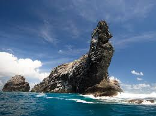
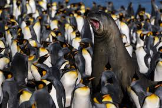

Globally There are:
- 🍃 287,225 Terrestrial and inland waters protected area coverages
- 🍃 16,545 Marine Protected area coverages
30x30 goal -
Conserve 30% of the World's Lands and Waters by 2030
The Largest Protected Areas in the world
- Marae Moana
- The largest multi-use marine park in the world located in Cook Islands, spanning a total ocean area of nearly 2M square kilometers
- The French Southern Territories National Nature Reserve
- The home of the largest population of king penguin, this reserve of 1.6M square kilometeres, located in the south of the Indian Ocean.
- Ross Sea Region Marine Protected Area
- Established in 2016, it is one of the most studied ecosystems in Antarctica and an important living laboratory for south polar research.
- Papahānaumokuākea Marine National Monument
- Located in the Northwestern portion of the Hawaiian archipelago, and approximately 1.5 sqaure kilometeres of the Pacific Ocean.